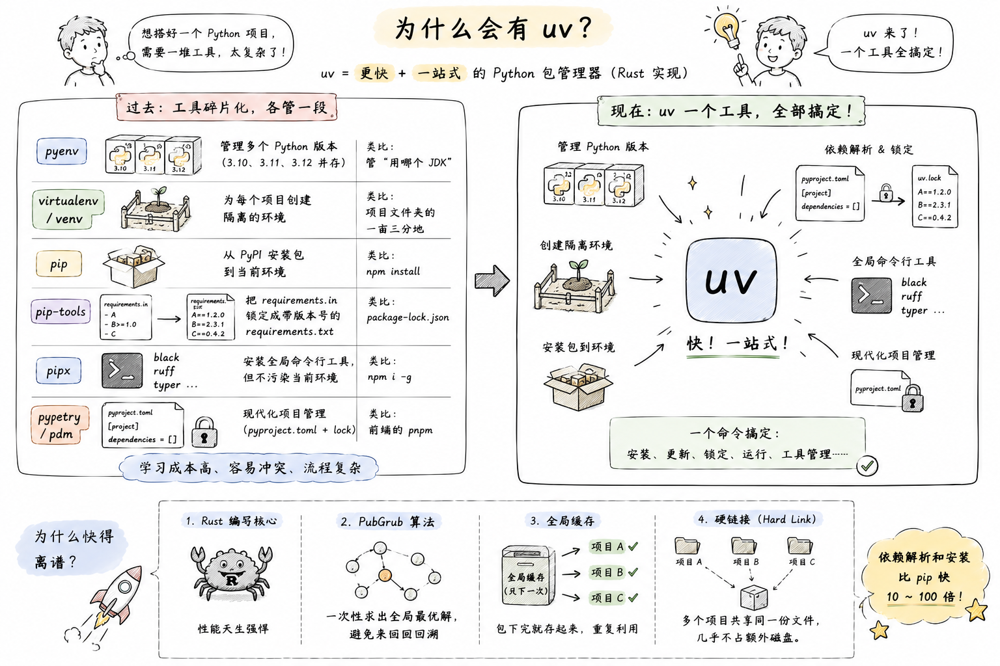
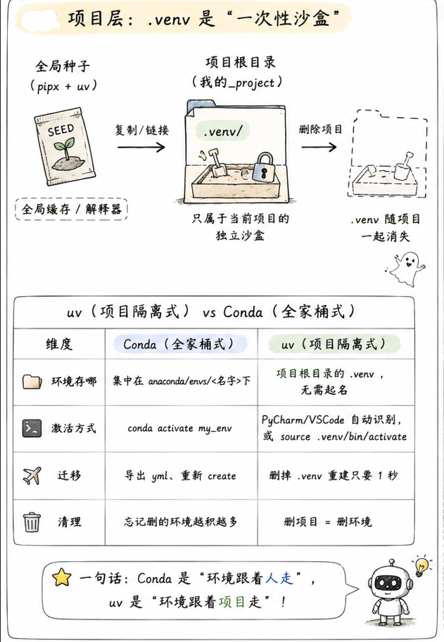
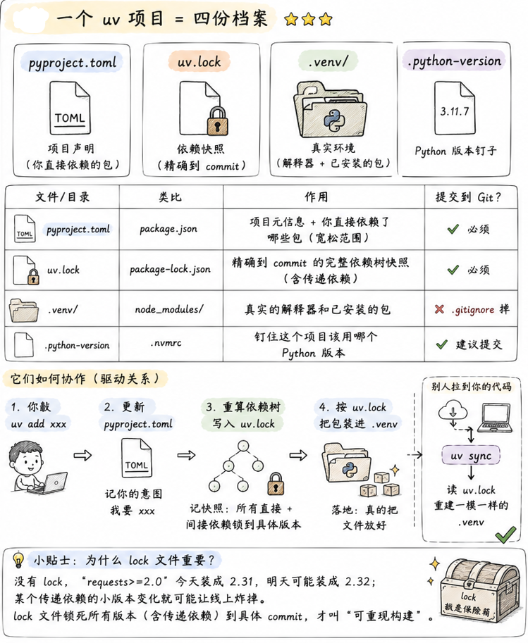

uv 深入理解 —— 一个工具取代一整个生态
官方文档：uv Documentation | uv GitHub
一、为什么会有 uv？
要理解 uv，得先看清楚它到底在解决什么问题。uv 不是"更快的 pip"这么简单，它是要一个工具把整个 Python 包管理生态给收编了。
1.1 Python 包管理的"百年孤独"⭐⭐⭐
一个成熟的 Python 项目，往往同时依赖下面这一堆工具，各管一段：
| 工具 | 干什么 | 类比 |
|---|---|---|
pyenv |
管理多个 Python 版本（3.10、3.11、3.12 并存） | 管"用哪个 JDK" |
virtualenv / venv |
为每个项目创建隔离的环境 | 项目文件夹的一亩三分地 |
pip |
从 PyPI 安装包到当前环境 | npm install |
pip-tools |
把 requirements.in 锁定成带版本号的 requirements.txt |
package-lock.json |
pipx |
安装全局命令行工具（black、ruff），但不污染当前环境 | npm i -g |
poetry / pdm |
现代化项目管理（pyproject.toml + lock） |
前端的 pnpm |
说白了，Python 的历史包袱就是——每个工具只解决一段问题，你想搭一套完整流水线，得把它们串起来，学习成本高、还经常互相打架。
Node.js 的 npm、Rust 的 cargo、Go 的 go mod——人家一个工具就把这些事全做了。Python 一直没这样的东西，直到 uv 出现。

1.2 uv 是什么
uv 是 Astral（也就是 ruff 的作者）团队用 Rust 写的下一代 Python 包管理器。核心目标只有两条：
- 快——依赖解析和安装比 pip 快 10–100 倍（Rust + 并行 + 全局硬链接缓存）
- 一站式——上面表格里那六个工具的活，
uv全干了
为什么快得离谱
- 用 Rust 写的核心，天生比 Python 快
- 依赖解析用的是 PubGrub 算法（Dart 的 pub、Rust 的 cargo 也用它），一次性算出全局最优解，不像 pip 那样逐个装逐个回溯
- 全局缓存 + 硬链接，同一个包在 100 个项目里只占一份磁盘
二、心智模型：uv 的两级架构 ⭐⭐⭐
这一节是理解 uv 的关键。只要建立起这个模型，后面所有命令都不需要死记。
2.1 全局层：Python 解释器"种子仓库"
uv 会在你的用户目录下维护一个 Python 解释器仓库（Windows 上默认在 C:\Users\<你>\AppData\Roaming\uv\python\，可以用 UV_PYTHON_INSTALL_DIR 改）。
uv python install 3.11 # 下载一个 3.11 的解释器进仓库
uv python install 3.12 # 再下一个 3.12
uv python list --only-installed # 看仓库里有啥
这些解释器是只读的、共享的、纯净的——你可以理解为 uv 帮你囤了一堆"Python 种子"。任何项目要用哪个版本，都从这里取。
2.2 项目层：.venv 是"一次性沙盒"
每个项目根目录下的 .venv 文件夹，就是这个项目的独立沙盒：
- 来源：从全局的"种子"复制/链接过来一个解释器
- 归属：只属于当前项目
- 命运：删项目文件夹时，
.venv跟着一起消失，不留任何痕迹

这和 Conda 的哲学完全相反：
| 维度 | Conda（全家桶式） | uv（项目隔离式） |
|---|---|---|
| 环境存哪 | 集中在 anaconda/envs/<名字> 下 |
项目根目录的 .venv，无需起名 |
| 激活方式 | conda activate my_env |
PyCharm/VSCode 自动识别，或 source .venv/bin/activate |
| 迁移 | 导出 yml、重新 create | 删掉 .venv 重建只要 1 秒 |
| 清理 | 忘记删的环境越积越多 | 删项目 = 删环境 |
一句话：Conda 是"环境跟着人走"，uv 是"环境跟着项目走"。后者更符合现代软件工程直觉——就像 node_modules、target/、vendor/ 一样，环境就应该躺在项目里，跟着项目一起被 .gitignore。
2.3 一个 uv 项目 = 四份档案 ⭐⭐⭐
uv init 之后，项目里会多出这四个东西，缺一不可：

| 文件/目录 | 类比 | 作用 | 提交到 Git？ |
|---|---|---|---|
pyproject.toml |
package.json |
项目元信息 + 你直接依赖了哪些包（宽松范围） | ✅ 必须 |
uv.lock |
package-lock.json |
精确到 commit 的完整依赖树快照（含传递依赖） | ✅ 必须 |
.venv/ |
node_modules/ |
真实的解释器和已安装的包 | ❌ .gitignore 掉 |
.python-version |
.nvmrc |
钉住这个项目该用哪个 Python 版本 | ✅ 建议提交 |
它们的驱动关系：
你敲 uv add xxx
↓
更新 pyproject.toml（记你的意图：我要 xxx）
↓
重算依赖树，写入 uv.lock（记快照：所有直接+间接依赖锁到具体版本）
↓
按 uv.lock 把包装进 .venv（落地：真的把文件放好）
别人拉到你的代码 → uv sync → uv 读 uv.lock → 一模一样地重建 .venv。"在我机器上能跑"这个问题，从根上被消掉了。
为什么 lock 文件是重要的
没有 lock，requests>=2.0 今天装成 2.31、明天可能装成 2.32；某个传递依赖的小版本变化就可能让线上炸掉。lock 文件锁死所有版本（含传递依赖）到具体 commit，才叫"可重现构建"。
三、依赖管理：uv add vs uv pip install ⭐⭐⭐
这是 uv 最容易踩坑的地方，也是很多人用 uv 但没用对的核心。
3.1 两种模式：项目模式 vs pip 兼容模式
uv 内置了两套平行的依赖管理命令：
它们的关键差异：
| 维度 | uv add（项目模式） |
uv pip install（pip 兼容） |
|---|---|---|
记录到 pyproject.toml |
✅ 自动 | ❌ 不管 |
更新 uv.lock |
✅ 自动 | ❌ 不管 |
| 卸载时清理传递依赖 | ✅ 干净 | ❌ 会留孤儿 |
| 团队协作 | uv sync 即完全一致 |
需 pip freeze 手动导出 |
| 适用场景 | 项目开发（99% 用它） | 迁移旧项目、临时试玩 |
3.2 一个坑：uv pip uninstall 会留孤儿 ⭐⭐
比如你装 flask，实际会带进来 Werkzeug、Jinja2、click、itsdangerous、blinker 五个传递依赖。
- 如果你当初用
uv add flask：uv remove flask会顺带把这五个孤儿一起清掉（前提是没有别的包依赖它们） - 如果你当初用
uv pip install flask：uv pip uninstall flask只删 flask 本体，剩下五个继续占位置
结论
只要是在做项目（有 pyproject.toml），一律用 uv add / uv remove，别用 uv pip install。后者只在两个场景下用：
- 从老项目的
requirements.txt迁移过来时，先装上再慢慢改造 - 临时试玩一下某个包，不想污染
pyproject.toml
3.3 依赖分组（dependency groups）⭐⭐⭐
先讲概念：一个项目的依赖，其实不是铁板一块。
拿一个 Web 项目举例，你实际会用到这些包：
flask、sqlalchemy、requests—— 上线跑生产必须的pytest、pytest-cov—— 只有跑测试才需要ruff、black、mypy—— 只有写代码时才需要mkdocs、mkdocs-material—— 只有构建文档站才需要
问题来了：把这些包一股脑塞进一个大袋子行不行？技术上行，但很难受——
- 上线部署时：Docker 镜像里塞进一堆
pytest、mkdocs，镜像白白胖 200MB，构建慢、拉起慢、攻击面还变大 - CI 里跑测试：明明只需要 test 相关的包，却要等所有依赖装完
- 构建文档的 CI job：明明只需要 mkdocs，却要装整个项目的运行时依赖
依赖分组就是给这些包分门别类装进不同袋子，用哪个装哪个。
1. 分组在 pyproject.toml 里长这样
[project]
name = "myapp"
dependencies = [ # ← 主袋子（main / project dependencies）
"flask>=2.0",
"sqlalchemy",
]
[dependency-groups] # ← 分组袋子，各自独立
dev = [ # 便利组：本地开发常用工具
"ruff",
"black",
"mypy",
]
test = [ # 跑测试才需要
"pytest",
"pytest-cov",
]
docs = [ # 建文档才需要
"mkdocs",
"mkdocs-material",
]
[project.dependencies] 是主袋子，跟着你项目发布出去；[dependency-groups] 下每个组都是可选袋子，只在本地/CI 需要时才装，不会打进最终发布的 wheel/sdist。
这是 PEP 735 的标准
[dependency-groups] 不是 uv 自造的，是 PEP 735 的标准写法，poetry / pdm 也在往这上面靠。写在这里的东西是跨工具通用的。
2. 怎么把包加到某个组
uv add ruff --dev # 加到 dev 组（--dev 是 --group dev 的语法糖）
uv add pytest --group test # 加到 test 组
uv add mkdocs --group docs # 加到 docs 组
uv add flask # 不带 --group → 进主袋子
3. uv sync 到底装哪些组 ⭐⭐
这是最容易踩坑的地方。默认行为：
对，dev 组默认是开着的——因为它假设你正在本地开发。想要"纯生产环境"的效果，得显式关掉：
对于非 dev 的其它组（比如 test、docs），默认不装，要显式打开：
uv sync --group test # 装：主依赖 + dev + test
uv sync --group docs # 装：主依赖 + dev + docs
uv sync --all-groups # 装：主依赖 + 所有组（本地开发全套）
想"只装某一组、连主依赖都不要"：
4. 场景速查
不同场景怎么组合，一张表说完：
| 场景 | 命令 | 装了什么 |
|---|---|---|
| 本地开发 | uv sync --all-groups |
主 + dev + test + docs（全套） |
| CI 跑测试 | uv sync --group test |
主 + dev + test |
| CI 建文档 | uv sync --only-group docs |
只 docs |
| 生产部署 | uv sync --no-dev |
只主依赖 |
| Docker 镜像 | uv sync --no-dev --frozen |
只主依赖，且不许改 lock |
命名约定
dev是一个"便利名"，uv 对它有特殊待遇（默认启用、--dev简写、--no-dev关闭）- 其它组的名字你随便起：
test、docs、lint、bench、typing……只要有意义即可 - 一个包可以同时属于多个组（比如
mypy可以既在dev也在typing），uv 会去重
四、常用操作速查
4.1 项目
# 新建项目（会顺带创建 .venv、pyproject.toml、uv.lock、.python-version）
uv init myproject
cd myproject
# 已有项目改造成 uv 项目
uv init
# 依赖
uv add requests # 加依赖
uv add "flask>=2.0" # 带版本约束
uv add --dev pytest # 开发依赖
uv remove requests # 移除
uv sync # 按 lock 装齐所有依赖
uv lock # 只更新 lock 文件，不装
4.2 虚拟环境
uv venv # 在当前目录创建 .venv
uv venv --python 3.12 # 指定 Python 版本
uv venv myenv # 起自定义名字（不推荐）
# 删除：直接删 .venv 文件夹即可
# 激活（大多数 IDE 会自动激活，无需手动）
source .venv/bin/activate # Linux / macOS
.venv\Scripts\activate # Windows
4.3 Python 版本管理
uv python list # 看有哪些版本可下
uv python list --only-installed # 看本机已装的
uv python install 3.11 # 装一个到全局种子仓库
uv python uninstall 3.13 # 卸掉一个
uv python pin 3.11 # 把当前项目钉到 3.11（写入 .python-version）
uv python find 3.11 # 查它装在哪
4.4 运行脚本 / 模块
uv run script.py # 用项目环境跑（自动 sync 一遍）
uv run python main.py
uv run pytest
uv run -m http.server 8000 # 跑模块
uv run --with requests script.py # 临时加个 requests 跑（不入 pyproject）
4.5 全局工具（替代 pipx）
给命令行工具（如 ruff、black、httpie）安装到全局隔离环境，不污染任何项目：
uv tool install ruff # 全局装
uv tool list # 看装了哪些
uv tool uninstall ruff # 卸
uv tool run ruff check . # 跑一次不装
uvx ruff check . # 上一条的简写（最常用）
uvx 是什么
uvx foo = uv tool run foo，语义类似 npx foo。一次性用一下某个 CLI 工具但不想装，就用它。
五、进阶配置
5.1 修改存储位置
uv 有两块占空间的东西，通过环境变量永久改路径：
| 环境变量 | 内容 | 默认位置（Windows） |
|---|---|---|
UV_PYTHON_INSTALL_DIR |
Python 解释器本体 | C:\Users\<你>\AppData\Roaming\uv\python |
UV_CACHE_DIR |
所有包的全局缓存（供 .venv 硬链接） |
C:\Users\<你>\AppData\Local\uv\cache |
C 盘紧张的话，把这俩挪到 D 盘。
5.2 国内镜像源
在项目的 pyproject.toml 里加：
或者环境变量 UV_INDEX_URL=https://pypi.tuna.tsinghua.edu.cn/simple 一劳永逸。
六、迁移与协作
6.1 从 requirements.txt 迁移
6.2 团队协作流程
# --- 开发者 A ---
uv add pandas # pyproject.toml + uv.lock 都自动更新
git commit -am "add pandas"
git push
# --- 开发者 B ---
git pull
uv sync # 按 uv.lock 装出和 A 完全一致的环境
生产环境部署
CI / Docker 里一定用 uv sync --frozen——它会拒绝更新 lock 文件，如果 pyproject.toml 和 uv.lock 不一致就直接报错。这样能防止部署时被"意外升级"。
七、什么时候不用 uv？
uv 强归强，也不是万能钥匙：
- 纯数据科学 / 需要 conda 生态：像
cudatoolkit、mkl这类 Anaconda 独家打包的二进制，PyPI 上要么没有要么麻烦，还是老实用 conda / mamba - 要跨语言依赖（比如 Python 项目里同时要 R、Julia）：conda 依然更省心
- 公司内网 + 没配好私服：uv 的镜像 / 私服配置比 pip 稍微多一步，如果只是零星几个包，pip 更快
其它 99% 场景，从今天起就切 uv 吧。
附录：命令速查表
| 目的 | 命令 |
|---|---|
| 新建项目 | uv init myproj |
| 加依赖 | uv add requests |
| 加开发依赖 | uv add --dev pytest |
| 移除依赖 | uv remove requests |
| 装齐所有依赖 | uv sync |
| 只更新 lock | uv lock |
| 跑脚本 | uv run script.py |
| 装 Python 版本 | uv python install 3.12 |
| 钉版本 | uv python pin 3.12 |
| 装全局 CLI 工具 | uv tool install ruff |
| 一次性跑 CLI 工具 | uvx ruff check . |
| pip 兼容装包 | uv pip install foo |
| 生产环境部署 | uv sync --frozen |